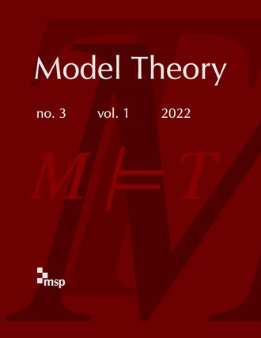
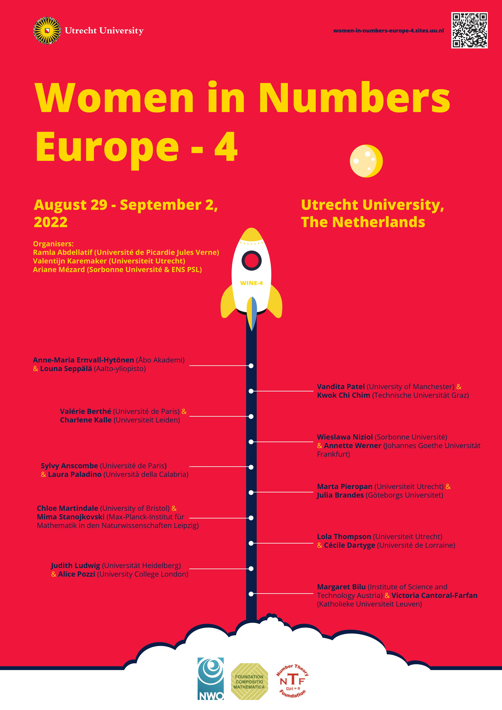

Welcome!
I am a mathematician. I am maîtresse de conférences at the Université de Paris, and a member of the Institut de Mathématiques de Jussieu–Paris Rive Gauche.
My research is in model theory and its connections to algebra and number theory. I am supported by GeoMod.
Current and upcoming.
- École d'été 2021 du GDR JC2A, Paris, 23rd – 27th August 2021
- Women in Numbers Europe 4, Utrecht, 29th August – 2nd September 2022
You can find resources for my teaching on my teaching page.
There is some recreational mathematics on the smörgåsbord of fun maths.
You are welcome to contact me .
News.
-

We are thrilled to announce the launch of a new journal: “Model Theory” is now welcoming submissions at https://msp.org/mt. It is published by the nonprofit Mathematical Sciences Publishers (MSP).
“Model Theory” welcomes submissions of original work in pure and applied model theory, as well as in other areas with which there is significant and current interaction. It publishes papers of very high quality aimed at a broad model-theoretic readership. -
 Public Science + Superheroes = Unmasked: the Science of Superheroes .
Available to buy from:
Public Science + Superheroes = Unmasked: the Science of Superheroes .
Available to buy from:
- Women in Numbers - Europe 4. This workshop will place in Utrecht on 29 August – 2 September 2022. 